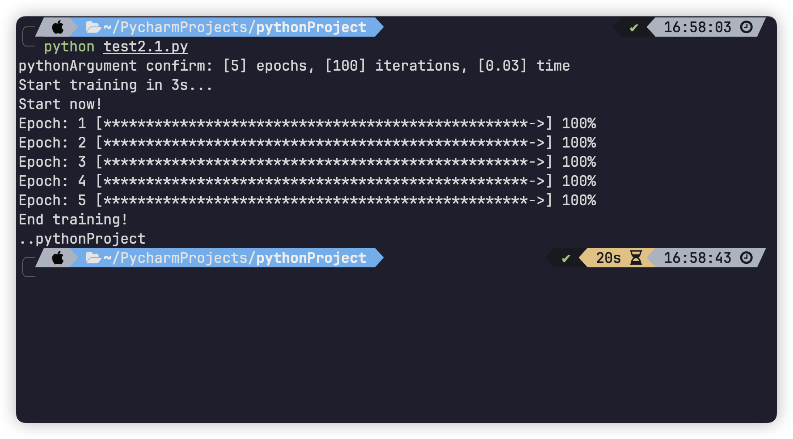
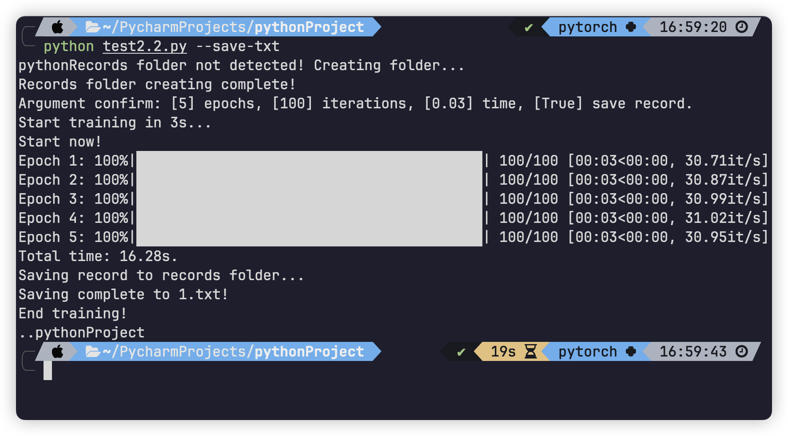
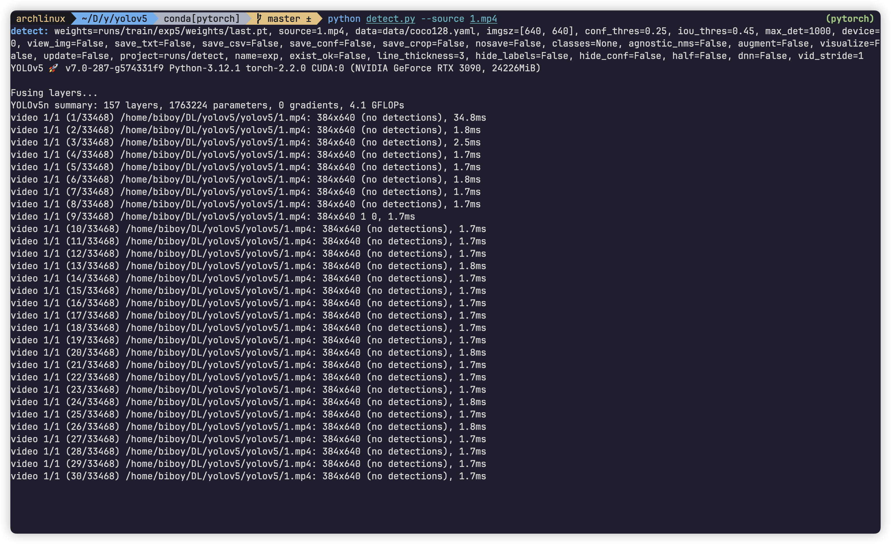

1. Introduction
Hello fellows! Today I’m excited to share insights about the argparse module, a robust and intuitive tool for creating command-line interfaces in Python. What makes argparse particularly fascinating to me is its ability to enable users to quickly leverage Python scripts with custom configurations and functionalities, without the need to dive into the underlying source code. This feature of argparse has captured my interest and again, showcasing its value in making Python files reusable and accessible for diverse applications.
By utilizing this module, individuals who frequently work with reusable Python files can significantly save their time. It simplifies the configuration of these files without the need for in-depth analysis, which is vital for tasks such as data processing, cleaning, and even AI model training since once their workflows are established, changes of these files are typically limited to data positioning and manipulation methods. Hence, I believe all of us will find this module invaluable for enhancing efficiency in our operations.
2. Examples
To quickly acquaint you guys with this module, I’ll demonstrate through three concise examples designed to progressively enhance your understanding. As we move from basic to more complex scenarios, you’ll gain valuable knowledge about argparse and, ultimately, master the key concepts such as:
- How we can design desired interfaces that fulfill our purpose.
- How to let arguments parsed into the file to be utilized in other functions calls.
- How to parse arguments into the file from terminal.
- How to integrate and create a streamline process for the arguments flow using argparse.
2.1 Example 1
# import the module.
import argparse
# The function that is designed to take in the arguments.
def parse_args():
parser = argparse.ArgumentParser(description='Example 1 for design in argparse')
parser.add_argument("-d", "--data", default="pokemon_names_and_descriptions.csv",
type=str, help="Path to csv file")
parser.add_argument("-f", "--fill", default="average", type=str,
choices=["average", "max", "min", "median"], help="Fillna method")
opt = parser.parse_args()
return opt
# Then call this function to utilize the arguments obtained.
def main():
opt = parse_args()
print(opt)
# Call the main function once the program runs.
if __name__ == "__main__":
main()
# outputs: Namespace(data='pokemon_names_and_descriptions.csv', fill='average')
In this example, we are going to learn how to design desired interfaces that fulfill our purpose starting with this small snippet of code. Typically, we define an extra function that will take in the value that are parsed in to the file, and call that function in our main function to get all the arguments.
Inside the parse_args() function, we first instanciate a parser object using argparse’s ArgumentParser method so that we can configure the parser and add argument to it in the following lines. The description argument inside it is used to provide the individuals who want to use this python file with a small description text, which will be illustrated more later.
After the instantiation, we can configure the parser object by using its add_argument() method. Inside this method, there will be 7 main parameters that we need to specify:
name_or_flags: Either the name of the argument or a list of strings (which is optional).action: The action that you want the program to carry out once it receives the argument from outside.default: The default value of the argument if not data is parsed in the file with respect to this argument.type: The type that you want the argument to be converted to once it is received by the program.choices: A list of the allowable values for the argument.required: Whether this argument is optional or required.help: A brief description text to show what the argument does.
Among these 7 parameters, I’ll list a two bullet points to help you understand how to use these to create your own interfaces:
- There are two types of string values that we can fill in
name_or_flags, positional argument (which require an input from the user) and optional argument, where optional argument usually start with-or--plus the name that you want and positional argument just with the name that you want. - The default value of
actionwould be"store"which simply just store the value that the user parse in. Another value ofactionthat we usually use is"store_true", which means if the user parse this argument (the one that are filled inname_or_flags), then its value will be true (further explained in the second example).
After absorb all the fundamental knowledge we can take a look at the place where we add our arguments.
parser.add_argument("-d", "--data", default="pokemon_names_and_descriptions.csv",
type=str, help="Path to csv file")
parser.add_argument("-f", "--fill", default="average", type=str,
choices=["average", "max", "min", "median"], help="Fillna method")
opt = parser.parse_args()
# outputs: Namespace(data='pokemon_names_and_descriptions.csv', fill='average')
The first line means that we add an argument named -d or --data. We then provide the default value, the type of the argument and a text that helps to describe this argument. The second line is similar, except that it limits the allowable values for this argument.
The outputs are a Namespace, which is an unique type in this module. The values inside of this object will be the values that the user parse in with respect to each argument, but some of they will be default if the user doesn’t parse the value of some argument into the file. What’s more, in case you are not familiar with with this Namespace object, we can transform it into a dictionary, which will be explained later in the following example.
After the completion of the configuration, we can get all the arguments using parse_args() method, and utilize them for further use.
2.2 Example 2
In this example, we focus on illustrating how to utilize the arguments obtained from the last example and bring them into actual practice.
# import the modules.
import argparse
import time as t
# The function that is designed to take in the arguments.
def parse_args():
parser = argparse.ArgumentParser(description='Example 2 for using args in argparse')
parser.add_argument("-e", "--epochs", default=5,
type=int, help="Number of epoch you want to run")
parser.add_argument("-i", "--iterations", default=100, type=int,
help="Number of iterations you want to run in each epoch")
parser.add_argument("-t", "--time", default=0.03, type=float,
help="Time you want each iteration in an epoch to run")
opt = parser.parse_args()
return opt
# Example code for training the model.
def train_model(epochs, iterations, time):
for epoch in range(epochs):
for iteration in range(iterations):
t.sleep(time)
rate = (iteration + 1)/iterations
process = int(rate*50)
a = "*" * process
b = "." * (50 - process)
print(f"\rEpoch: {epoch + 1} [{a}->{b}] {int(rate*100)}%", end="")
print()
# Call the parse_args function to utilize
# the arguments obtained in train_model function.
def main():
opt = parse_args()
print(f"Argument confirm: [{opt.epochs}] epochs, [{opt.iterations}] iterations, [{opt.time}] time")
print("Start training in 3s...")
t.sleep(3)
print("Start now!")
train_model(**vars(opt))
print("End training!")
# Call the main function once the program runs.
if __name__ == "__main__":
main()
In the last example, we mention that most of us are not familiar with Namespace object, and therefore we need to find a way to transform it into common data structure like dictionary in Python to make use of it.
It turns out that there’s a built-in method vars which will calls the __dict__ method in the corresponding object to transform it into dictionary and return it. If we print vars(opt) in the main function, the outputs will be something like:
# outputs: {'epochs': 5, 'iterations': 100, 'time': 0.03}
Since Namespace is also a dict-liked object, we can access its member value by using . like this line of code:
print(f"Argument confirm: [{opt.epochs}] epochs, [{opt.iterations}] iterations, [{opt.time}] time")
Then we can parse the dictionary as argument using ** operation, which is often referred as “Unpacking function arguments” into the goal function. Here, we parse the arguments obtained into train_model using train_model(**vars(opt)).`
With \r functionality in print, we can achieve the outputs of the Example 2 as follow once we run the file in the terminal:

2.3 Example 3
In this section we mainly focus on introducing the use of store_true and explain how to use it in actual practice.
# import packages.
import argparse
import time as t
from tqdm import tqdm
from pathlib import Path
# Get the directory of the current file.
FILE = Path(__file__).resolve()
ROOT = FILE.parents[0].resolve()
# Create a folder named "records" if there isn't one.
records = ROOT / "records"
if not records.exists():
print("Records folder not detected! Creating folder...")
records.mkdir()
print("Records folder creating complete!")
# The function that is designed to take in the arguments.
def parse_args():
parser = argparse.ArgumentParser(description='Example 3 for argparse')
parser.add_argument("-e", "--epochs", default=5, type=int, help="Number of epoch you want to run")
parser.add_argument("-i", "--iterations", default=100, type=int,
help="Number of iterations you want to run in each epoch")
parser.add_argument("-t", "--time", default=0.03, type=float,
help="Time you want each iteration in an epoch to run")
parser.add_argument("--save-txt", action="store_true", help="Whether Save record to a txt file")
opt = parser.parse_args()
return opt
# Example code for training the model with simplified process using tqdm.
def train_model(epochs, iterations, time, save_txt):
for epoch in range(epochs):
for _ in tqdm(range(iterations), desc="Epoch {}".format(epoch + 1)):
t.sleep(time)
# The function that will save the configuration of the current training process
# and save them with the time consumed in a txt file.
def save_record(epochs, iterations, time, total_time):
if len(list(records.glob("*"))) == 0:
(records / "1.txt").write_text(f"Epoch {epochs}, Iterations {iterations}, Time for each iteration: {time}s, "
f"Total time: {total_time:.2f}s")
return "1.txt"
else:
files = records.glob("*")
last_file = list(files)[0]
integer = int(last_file.name.split('.')[0])
(records / f"{integer + 1}.txt").write_text(
f"Epoch {epochs}, Iterations {iterations}, Time for each iteration: {time}s, "
f"Total time: {total_time:.2f}s")
return f"{integer + 1}.txt"
# The main function which deals with the logic of the program.
def main():
opt = parse_args()
print(f"Argument confirm: [{opt.epochs}] epochs, [{opt.iterations}] iterations, [{opt.time}] time, [{opt.save_txt}] save record.")
print("Start training in 3s...")
t.sleep(3)
print("Start now!")
start_time = t.time()
train_model(**vars(opt))
end_time = t.time()
total_time = end_time - start_time
print(f"Total time: {total_time:.2f}s.")
if opt.save_txt:
print(f"Saving record to records folder...")
file_name = save_record(vars(opt)["epochs"], vars(opt)["iterations"], vars(opt)["time"], total_time)
print(f"Saving complete to {file_name}!")
print("End training!")
# Call the main function once the program runs.
if __name__ == "__main__":
main()
It can be noticed that in the parse_args function, we add a new line:
parser.add_argument("--save-txt", action="store_true", help="Whether Save record to a txt file")
where its action is "store_true". This means that if the user add --save-text in the terminal while calling this python file, the value of the argument save_text will be set to True. Hence, following the main function’s logic, whether the program will call save_record will depend on the input of the user.
In this example, we also replace manual progress bar printing with tqdm and integrate pathlib into the file for routing of the diretory. After running the file with --save-text added, the outputs of the file will be:

And calling the file with the same argument for multiple times will let the program name the txt file with the integer value increasing:
The directory and the txt file content will be:
2.4 Example 4
The emphasis of this example targets at how to check what configuration can we change and how to parse the argument into the file. This time, we are going to use real re-usable file to further enhance our understanding. The repositary that we are going to use is here, where detect.py is the file that we want to use. Without diving into the actual source code, we can take a look at the argument of the file that we can configure by using the -h or --help argument:
This brief description is enough for us to know the usage of the file and the options that we can set without looking into the actual code. In our case, we need to use this file to accomplish object detection, so the only argument that we need to specify is --source, followed by the source that we want the program to detect. I’ve already trained the model to recognize Minecraft player and use that weights as the default weights value, so there’s no need to specify it here. After running the script, the program will begin detecting object in the source according to our input string of the position of the source frame by frame.

The output can be found here, with preview down below:

3. Conclusion
argparse is really a great module that makes our life easier, ranging from the perspective of time-saving property to nature of user-friendly. I believe that after my introduction and examples, everyone will love this module and utilize it in actual production environment!